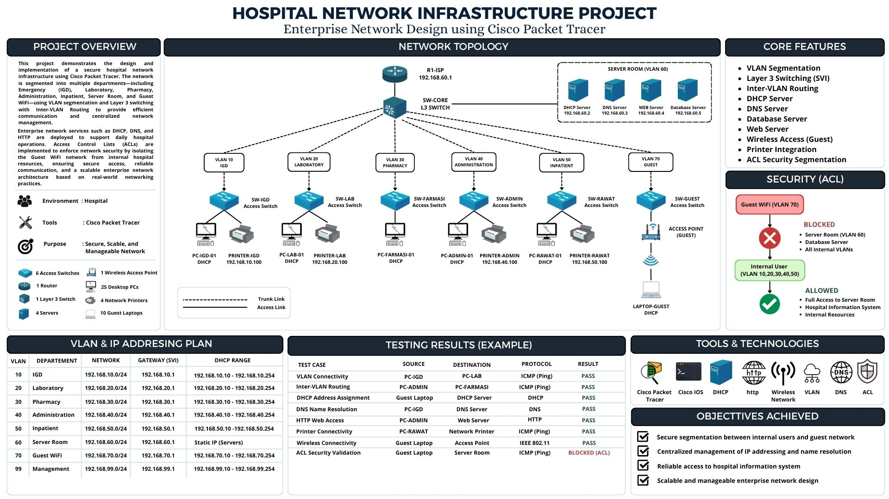

Featured Projects

University Network Infrastructure
Designed a campus-scale network infrastructure using Cisco Packet Tracer featuring VLAN segmentation, Inter-VLAN Routing, Multi-Area OSPF, DHCP, DNS, Layer 3 Switching, and EtherChannel.

Hospital Network Infrastructure
Designed a secure hospital network architecture with VLAN segmentation, centralized services, and routing for multiple operational departments.

Enterprise ISP Integration
Multi-site enterprise network integration connecting headquarters and branch offices through WAN routing with centralized infrastructure management.

IoT Automatic Irrigation System
Smart irrigation system integrated with Machine Learning (Random Forest) for automated watering decisions. Awarded Best Paper at IEEE AGERS 2025.